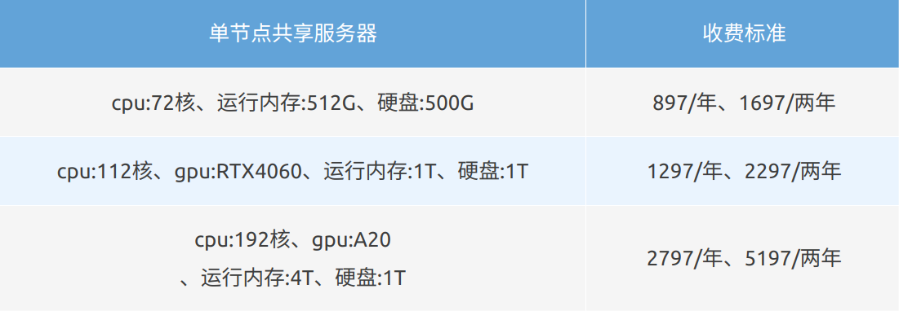

共享/集群/独享服务器的区别#
● 共享服务器：多人共享资源环境，高峰期用户间需要互相体谅，经济实惠[仅CPU等计算资源共享，个人磁盘仅自己可看，他人无权查看]
● 集群服务器：多台服务器协同，可以进行节点间的迁移，解决节点拥挤导致的分析效率降低
● 独享服务器：独占整台服务器的资源，几乎完全等于个人实体电脑，自由度MAX，接受定制
1.独立的用户环境
2.预装上千种R包和常用生信工具
3.数据历史存档恢复[共享系列不支持]
4.极速响应技术支持
5.SXY自建镜像，包括cran, bioconductor, conda等
6.大语言模型AI助手
单节点共享服务器，主打高性价比:#
A1款：
适合刚开始入门的生信小白，做一些基础分析。
A3款：
如果您的项目需要一定的图形处理能力，第二款就很合适。像涉及到一些需要图形加速的生信分析，比如蛋白质三维结构的可视化分析等，在保证性能的同时，价格也比较亲民。
A5款：
适合处理大规模的生信数据，比如复杂的多组学数据整合分析、大规模的基因变异检测等任务，但高峰期任务需要排队处理，且不能占用太多资源。

多节点集群服务器，服务器中的豪华轿车:#
H1入门款：
适用于轻量级的基因组组装（基因组大小1-2G）、小样本的群体重测序 & 变异检测（1-100样本 30x深度）、bulk RNA-seq (1-30样本 30x深度)、~5w内的单细胞分析、宏基因组单个样本原始数据 10-50G（肠道宏基因组常见 15-30G / 样本，土壤样本可达 50G）
H2性能款：
该配置可支撑中小型实验室的全流程生信分析，从基础测序数据处理到复杂基因组学研究，以及对GPU有需求的项目。
H3全能款：
在H2项目的基础上有更多的样本，尤其适合做大样本群体遗传GWAS分析，追求卓越的性能体验，以及多人协作的便利性。
独享服务器，服务器中的劳斯莱斯:#
资源专属：
独占服务器的 CPU、内存、硬盘等硬件资源。在进行大规模基因序列分析、蛋白质结构预测等复杂计算任务时 ，不会因其他用户占用资源而导致计算速度变慢，保障了运算的高效性和及时性。
稳定运行：
没有其他用户干扰，服务器的性能表现稳定。在处理生信数据的长时间任务时，不会出现因资源争抢导致的程序中断或运行缓慢的情况，保证了数据分析的连续性和准确性。
VIP专属售后服务：
提供7X24h专属的技术支持和售后服务，在遇到服务器故障、性能问题等情况时，能获得更及时、高效的解决方案。
定制服务：
根据用户的特殊需求，可以提供定制化的服务方案，满足用户在不同场景下的个性化需求。